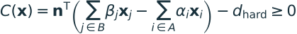
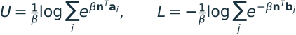
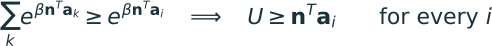
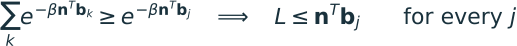
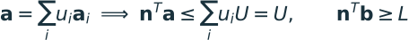
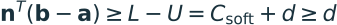
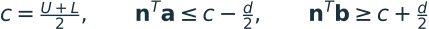
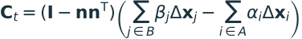
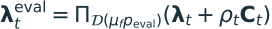

ALM contact with final-only truncation
Jump to a section
- ALM contact with final-only truncation
- 1. Main idea
- 2. Contact constraint and barycentric witnesses
- 3. Soft cushion plus hard boundary
- 4. Friction: tangential slip and a Coulomb disk
- 5. Updating normals after penetration
- 6. Initial spherical queries and motion coverage
- 7. Final truncation without a global QP or new coloring
- 8. Solver flow and proposed data
- 9. History after truncation
- 10. Validation and meeting decisions
- 11. Relation to the elasticity work
Discussion draft for the VBD group meeting · 14 September 2026
Status: This is the proposed contact stage, not an implemented solver. The current stage-1 code implements optional elasticity ALM and retains the existing contact and per-color DAT behavior. This document records the contact decisions from our discussion, with remaining choices identified explicitly.
1. Main idea
Build oriented contact constraints from a known separated configuration. Let ALM/VBD iterates penetrate while their multipliers accumulate separating force. After the solve, conservatively truncate the proposed motion before committing the next state.
Accepted separated pose
-> initial spherical queries + motion budgets
-> match contact history and build separation certificates
-> ALM/VBD sweeps; internal poses may penetrate
-> final displacement caps
-> accepted positions, velocities and retained history
The force constraint and the final safety certificate have different jobs. The first drives the solve; the second bounds the entire primitive motion. Neither finite-iteration ALM convergence nor arbitrary initial interpenetration is assumed to be solved automatically.
2. Contact constraint and barycentric witnesses
For each supported primitive pair, let the normal point from side A to side B:

The weights are nonnegative barycentric coordinates and sum to one on each side.
A vertex has weight one;
an edge has two weights; a triangle has three. hard_gap includes the desired
thickness offset. Positive C means separation along the chosen orientation;
negative C means a violation of this witness constraint.
Agreed evaluation policy: recompute barycentrics before contact evaluation, then treat them as fixed during the local solve. Hold the selected normal fixed within that solve as well. Its refresh schedule is a separate choice.
For compressive normal force magnitude p >= 0:
force_Ai = -p * alpha_i * n
force_Bj = +p * beta_j * n
The two sides receive equal and opposite total forces. Fixed weights simplify the local derivatives; they do not guarantee smoothness across witness-feature changes, nor does a frozen normal guarantee angular-momentum consistency when the current witnesses are no longer aligned with it. These are evaluation targets for the normal-refresh policy.
A witness gap is not a full-primitive certificate. The gap along a normal that does certify separation of the two convex primitives is:
C_support = min_j(dot(n, x_Bj)) - max_i(dot(n, x_Ai)) - hard_gap
A positive barycentric gap can coexist with another primitive vertex crossing the plane. The final safety pass must therefore constrain all primitive vertices.
2.1 Proof: the conservative softmax separates every point
Yes: satisfying the unnormalized softmax constraint certifies separation of the entire two convex primitives, not just their interpolated witnesses. This is a mathematical property of the alternative constraint below; it does not mean a finite ALM solve will always satisfy it.
Let A and B be triangles, edges, vertices, or other convex hulls of the included vertices. Use a unit normal n, sharpness β > 0, and required gap d ≥ 0. Define two smooth support bounds, an upper bound U for side A and a lower bound L for side B:

The proposed conservative constraint is:
Step 1: U bounds every A vertex. The exponential sum includes the term for each vertex i. Since log is increasing and β is positive:

Step 2: L bounds every B vertex from below. Apply the same argument to the negative projections. Multiplication by −1/β reverses the inequality:

Step 3: the bounds extend to every point inside each primitive. Any point a in a triangle or edge is a convex combination of its vertices. Its weights are nonnegative and sum to one, so averaging quantities bounded by U cannot exceed U. Likewise every point b on side B has projection at least L:

Step 4: C ≥ 0 puts these whole primitives on opposite sides. Combining the bounds, for every a in A and every b in B:

An explicit separating plane has offset c = (U + L)/2. Every point of A stays on its A side and every point of B stays on its B side:

For d > 0 this gives strict separation and Euclidean distance at least d, because a projection onto a unit direction cannot exceed the full distance. For d = 0 the inequalities permit boundary contact but forbid crossing the separating plane. The plane is the one constructed above, not necessarily the previous DAT plane with its old offset.
Equivalently, the soft constraint is always a lower bound on the true support gap along n:
The implication is one-way. Csoft ≥ 0 proves separation; Csoft < 0 does not prove intersection. Smoothing can require extra clearance, and a particular normal can fail even when another normal separates the primitives.
Conditions that matter for the guarantee
- Use sums, not averages, inside the logarithms. Dividing by the vertex count, or inserting normalized barycentric weights without a conservative correction, loses the upper/lower-bound proof. For example, in one dimension A = [0, 2], B = {1.5}, and β = 1: the averaged-log soft maximum of A is about 1.434, falsely giving a positive gap about 0.066 even though B lies inside A.
- Include every vertex defining each primitive. A point sampled from a curved shape does not automatically bound the unsampled shape. For a triangle, the three vertices suffice because every triangle point is their convex combination.
- Evaluate the actual conservative gap. Softmax-weighted average witness positions alone are not equivalent to the log-sum-exp support bounds.
- The proof is valid for any unit normal that satisfies the inequality, including one obtained by the proposed local normal optimization. That optimization need not reach its optimum to validate the certificate.
- This certifies this pair at this pose. A finite ALM iterate with C < 0 has no such certificate. For moving or rotating normals/bodies, endpoint checks alone do not generally certify the path; final conservative truncation still has a job. With a single fixed n and affine vertex paths, satisfying this same constraint at both endpoints does certify the intervening segment.
- The equations are exact-arithmetic statements. The implementation needs stable shifted log-sum-exp evaluation and a numerical safety margin consistent with its error bounds; a rounded value near zero is not itself a rigorous floating-point certificate.
This proves the geometry of the softmax alternative. Replacing the normal witness row also requires its own derivatives and a decision about how friction uses the resulting force distribution; the barycentric formulas elsewhere on this page remain the earlier design baseline.
3. Soft cushion plus hard boundary
Keep the intended pre-contact cushion and a nonpenetration boundary. Introduce a
slack gap z with:
psi(z) = 0.5 * K * max(activation_gap - z, 0)^2
enforce: C = z
z >= 0
At equilibrium, the cushion supplies K * (activation_gap - C) for
0 < C < activation_gap; it releases outside the activation range. At C = 0,
the hard-boundary reaction can exceed K * activation_gap. It is not capped at
the cushion force.
ALM allows the temporary signed witness gap C to be negative while z remains
nonnegative. With positive compressive multiplier p and metric rho > 0, use
the augmented term p*(z-C) + 0.5*rho*(z-C)^2. The local slack solve is explicit:
y = C - p / rho
if y >= activation_gap:
z = y
else:
z = max(0, (rho*y + K*activation_gap) / (rho + K))
p_eval = p + rho*(z - C)
This yields three regimes:
| Regime | Transmitted normal force | Local gap stiffness |
|---|---|---|
| Released | p_eval = 0 |
0 |
| Cushion | p_eval = s*p + k_eff*(activation_gap-C) |
k_eff |
| Hard boundary active | p_eval = p-rho*C |
rho |
s = K / (K + rho)
k_eff = K*rho / (K + rho)
In hard mode, penetration increases the separating force because C < 0.
Use the raw signed gap so separation can also release unsupported history.
The formulas above define the sign convention; they correct the slack-sign
ambiguity in the original formula reference.
Within a color solve, read persistent p and evaluate p_eval from the current
local geometry. After a complete color sweep, evaluate the same update at the
resulting pose and write p <- p_eval once per contact. Do not update an element's
persistent multiplier separately for every visited endpoint.
With frozen barycentrics and normal, the particle Hessian contribution is the
regime's gap stiffness times weight^2 * n * transpose(n). A rigid-body path must
also account for its pose parameterization. The proposed slack solves remain
local; no global linear system is introduced.
4. Friction: tangential slip and a Coulomb disk
Add an ideal Coulomb friction row to the same barycentric contact. Let
mu_f >= 0 be the friction coefficient, distinct from the elasticity coefficient
mu. The initial proposal uses one coefficient for both sticking and sliding.
Its force budget uses the current compressive normal force, including the
cushion contribution.
Tangential constraint
Let delta_x_i = x_i - start_x_i be displacement from the accepted pose at the
start of the timestep. Use the current barycentric weights on both time
levels, so merely changing a witness does not get counted as particle motion.
With unit normal n, the tangent projector and relative slip are:

C_t = 0 is the sticking condition. Sliding permits nonzero slip while the
friction force reaches its Coulomb bound. This is not an unconditional zero-slip
constraint. Inside ALM, evaluate C_t at the current candidate pose.
Force evaluation and multiplier update
Store a tangential resistance vector lambda_t with force units and a positive
numerical metric rho_t with stiffness units. A world-space vec3 constrained
to the tangent plane avoids requiring a stored arbitrary tangent basis.
Evaluate the normal row first to obtain p_eval, then project the tangential
trial onto the disk of radius mu_f * p_eval:

Here D(r) contains tangent vectors of length at most r. With the incoming
history already projected into the current tangent plane, the disk projection
is a local clamp:
radius = mu_f * p_eval
trial = lambda_t + rho_t * C_t
if radius == 0:
lambda_eval = 0
elif length(trial) <= radius:
lambda_eval = trial
else:
lambda_eval = radius * trial / length(trial)
No compliance retention factor s multiplies this update. Ideal friction
has no authored tangent spring whose compliant relaxation should decay the
stored sticking force. rho_t is a numerical metric, not a material friction
stiffness.
The vector above is a resistance multiplier; its physical forces are:
These forces sum to zero and oppose relative motion of B with respect to A at
a sliding fixed point. At convergence, an interior disk solution has C_t=0;
a sliding solution lies on the disk boundary and has
-dot(lambda_t, C_t) <= 0. Retained history does not guarantee dissipative work
at every unconverged iterate.
Read persistent normal and tangent multipliers during each color solve. After
the full sweep, compute p_new once, then compute the tangent update using the
new radius mu_f * p_new, and store lambda_t <- lambda_eval once. Do not run
normal ascent a second time after updating p just to obtain the friction budget.
Local derivative and capture
Freeze the normal, weights, and normal-force budget for the local tangential
block. With P_t = I - n*transpose(n), a suitable block uses the derivative of
the disk projection:
Released, radius = 0: J_t = 0
Inside the disk: J_t = rho_t * P_t
Outside the disk: J_t = rho_t * radius / length(trial)
* (P_t - u*transpose(u))
u = trial / length(trial)
Per-particle contribution: weight^2 * J_t
These are positive-semidefinite local block approximations to the coupled contact problem. They omit derivatives of the normal-force budget and refreshed geometry. At the nondifferentiable disk boundary, the prototype can take the interior branch; handle zero radius first. A rigid-body path contracts the same tangent block through its contact-point Jacobian.
Only fixed-size vectors, matrices, and local projections are needed: no extra
coloring or global solve is introduced. Select and validate rho_t against the
pair's tangential mobility; its tuning remains a numerical choice.
Contact changes and accepted motion
On a matched contact whose normal changes, project the retained vector into the new tangent plane and clamp it to the new normal-force budget. Initialize unmatched tangent history to zero, and clear it when the normal contact releases. Simple projection is a baseline transfer rule, not a complete objective transport law for arbitrarily rotating contact frames; large frame changes and feature switches need explicit validation.
After final truncation, recompute tangential slip from the accepted motion. Trial multipliers were learned from the candidate motion, so transferring them requires checking the accepted normal budget and tangent cone as well. Partial clipping does not automatically make those multipliers consistent with the accepted slip. The reconciliation policy is discussed in section 9.
5. Updating normals after penetration
An unsigned closest-point distance at a penetrated pose can lose which side of the contact should be considered feasible. Retain the orientation established from safe geometry.
The proposed refresh uses a pair-local safe surrogate:
- Keep a previously certified separated configuration for this pair.
- Conservatively truncate this pair's motion toward its current candidate to obtain another separated configuration.
- Recompute an oriented normal and witness geometry there, and use the selected normal for subsequent force evaluations.
This local truncation changes the geometry used to refresh the contact. It does not truncate the global ALM iterate or make that iterate collision-free. The pair-local path needs a valid separation test or conservative bound; an endpoint distance check alone is insufficient.
Keep force normals distinct from planes used for final safety. A plane constructed at a later pair-local surrogate need not separate the accepted starting pose. Only replace a final safety plane after validating it at that starting pose. Otherwise retain the original certificate.
Open choices: refresh cadence, behavior at degenerate features, limits on normal rotation, and multiplier transfer when the contact direction changes substantially.
6. Initial spherical queries and motion coverage
Start with the existing distance-neighborhood approach rather than swept AABB candidate detection. This decision requires conservative motion budgets.
For a pair whose two sides can move by at most B_A and B_B, the initial query
must cover the corresponding possible approach. A sufficient distance threshold
for finding every pair that could enter the activation region is:
query_reach >= hard_gap + activation_gap + B_A + B_B
This assumes the initial query is complete within that threshold for the supported primitive types. Bound motion of every point on each primitive; for linear simplex motion, bounds on every vertex suffice. Apply final motion caps so the committed trajectory respects the declared budgets, even if intermediate ALM iterates travel farther.
The bounds prevent an excluded pair from reaching contact during committed motion. An overflowing candidate buffer invalidates the certificate; silently dropping pairs is not acceptable.
Swept AABB detection and solving newly encountered pairs remain future work.
7. Final truncation without a global QP or new coloring
Use planes that separate the accepted starting configuration. For a plane
dot(n,x)=b, reserve the thickness margin on the two sides. Let side_i be +1
for vertices assigned to the positive side and -1 for the negative side.
clearance_i = side_i * (dot(n, start_x_i) - b) - hard_gap/2
approach_i = max(0, -side_i * dot(n, candidate_dx_i))
if approach_i > 0:
t_i <= safety_factor * clearance_i / approach_i
t_i = min(1, all incident plane caps, neighborhood motion cap)
accepted_x_i = start_x_i + t_i * candidate_dx_i
Each initial clearance must be nonnegative. 0 < safety_factor < 1 preserves a
fraction of existing clearance. Zero approach adds no plane cap; zero clearance
and positive approach stop that vertex. Numerical tolerance must be represented
in the initial margins and feasibility checks.
Every vertex stays on its assigned side throughout its linear motion. Therefore the convex primitive stays on that side too. The proof applies to independent vertex fractions; the fractions need not be equal. Combined with candidate coverage, this gives the intended final safety certificate under the stated geometric assumptions.
Per-pair kernels can reduce caps with atomic minima into fixed per-vertex arrays. This needs neither another coloring nor a global QP. It is deliberately conservative: a side moving away cannot automatically donate its clearance to the other side. This can reduce sliding progress or cause stalls even when a less restricted collision-free motion exists.
Rigid bodies
Use one fraction per body so truncation preserves rigidity. Specify a continuous
rotation path, such as scaling a fixed rotation increment by t_body. Bound the
motion of every relevant body point, including rotation. For radius r and
rotation-angle magnitude theta, r*theta bounds rotational path length over
the full increment. Combine it with translation and scale the bound by the body
fraction. Endpoint separation alone does not certify the rotational trajectory.
An optimal coupled choice of fractions could improve progress, but is outside the first implementation.
Prescribed kinematic geometry must also obey the certified trajectory and motion budgets. Its commanded motion cannot be silently truncated. If that trajectory violates coverage or the plane certificate, flag/reject the step or apply an explicitly defined kinematic-motion policy. This is required for the safety claim to include moving obstacles.
8. Solver flow and proposed data
At construction:
allocate bounded candidate, history, incidence and cap buffers
At step start:
validate accepted pose and initialize motion budgets
query nearby primitive pairs
canonicalize pair keys and match previous history
build start-valid safety planes for candidate pairs
initialize working history; seed or clear unmatched rows
For each configured VBD sweep:
refresh force geometry according to the chosen policy
for each existing particle/body color:
evaluate the normal contact row, then its friction row, and elasticity
solve local systems; allow penetrating trial positions
update each normal multiplier once, then its friction multiplier
At step end:
compute candidate displacement from accepted starting pose
reduce all plane and neighborhood caps
construct accepted positions/body poses
compute velocities and friction slip from accepted motion
validate status and publish state plus reconciled history
| Buffer / field | Purpose |
|---|---|
| Canonical primitive-pair keys, row types, validity mask | Stable matching across detector reorderings; array slot alone is not identity. |
| Primitive indices and endpoint incidence / CSR | Gather and distribute contact contributions using the refactored representation. |
| Barycentric witnesses, force normal, pair-local safe reference | Geometry for force evaluation and oriented normal refresh. |
| Normal multiplier, rho, cushion stiffness and activation gap | Local contact response and history. |
| Tangential multiplier (vec3), rho_t and mu_f | Coulomb friction history, numerical tangent metric and friction coefficient. |
| Previous contact normal and accepted starting positions | Tangent-history transfer and consistent two-time-level slip evaluation. |
| Start-valid safety planes and assigned sides | Full-primitive final-motion certificate. |
| Accepted starting pose and candidate displacement | Define the motion being truncated. |
| Per-vertex/body fractions and motion budgets | Atomic-min reduction and neighborhood coverage. |
| Device counts, overflow/status flags, reset generation | Capture-safe bounded execution and invalid-step handling. |
| Committed and working history, or equivalent rollback storage | Avoid publishing history from a rejected step. |
Allocation sizes, kernels and iteration counts must be fixed for CUDA capture. Device counts and masks guard inactive work; no host readback or allocation belongs inside replay. Capacity growth can happen outside capture. If capacity or certificate validation fails, preserve the accepted state and expose a device-visible invalid-step status.
Rollback must include structural ALM history because elasticity duals also change during the candidate solve. Preserve reset invalidation when rolling back: never resurrect history from before a selected-world reset.
9. History after truncation
Final clipping changes the pose from which ALM learned its trial multipliers. Do not silently treat trial history as equilibrated at the accepted pose. The carry/reconcile policy remains an implementation decision. Compare retained trial multipliers with an accepted-pose update and measure the resulting residual, chatter and truncation frequency. A complete rejected step requires rollback; partial clipping is a separate case.
Compute velocities and tangential slip from accepted motion. Check the carried tangent multiplier against the accepted normal-force budget, tangent plane and Coulomb bound. Clamping enforces the bound but alone does not guarantee that the multiplier opposes the accepted slip. Measure accepted frictional work when clipping changes the relative motion. Detailed history reconciliation and contact-frame transport remain open policies.
10. Validation and meeting decisions
Before claiming collision safety, test the certificate and candidate coverage independently of ALM convergence. Include a primitive whose barycentric witness is separated while another vertex crosses, a pair just outside query range, moving obstacles, rigid rotation, zero clearance, and candidate overflow.
For the force law, verify release, cushion, wall accumulation, signed-gap unwinding, and endpoint force balance. Exercise penetrating iterates and normal refresh across feature changes. Measure accepted and trial residuals separately.
For friction, test zero normal load, zero friction coefficient, sticking below the Coulomb limit, sliding at the limit, release, reversing slip, changing contact normals, witness changes, and final truncation that alters relative slip. Check force signs and disk bounds, verify the fixed-budget local block with finite differences away from the rim, and measure accepted frictional work.
For the complete solver, compare equal GPU time against current VBD/DAT on resting contact, stacking, sliding, self-contact and large proposed motion. Report penetration, final truncation fractions, convergence, jitter, stalls, and capture/replay equivalence including selected-world reset.
Decisions for the group: normal-refresh cadence; matching and history transfer through feature changes; motion-budget/query-radius policy; history reconciliation after clipping; and whether conservative plane caps provide enough progress before considering a coupled optimization or swept queries.
11. Relation to the elasticity work
The contact and elasticity rows share the ALM/VBD schedule, but their constraints and feasibility requirements differ. Optional pressure, spring and hinge ALM are already implemented. Full spatial matrix mu history has a rotation artifact.
The SVD proposal instead stores symmetric material stretch history with
S = sqrt(transpose(F)*F + epsilon^2*I). It preserves the target mu stress
mu*F at convergence, with fixed regularization. It has reference and kernel
probes; integrated performance and stability are still open.